←Proyectos
Cobertura en vivo
MARYRUN XI
Cobertura audiovisual completa de la carrera: transmisión multicámara en vivo, podios, fotos y reels del evento.
Cobertura multicámara
Todos los ángulos del evento
Tres puntos de cámara cubriendo la carrera en tiempo real. Cambia entre la transmisión en vivo y el recap grabado.
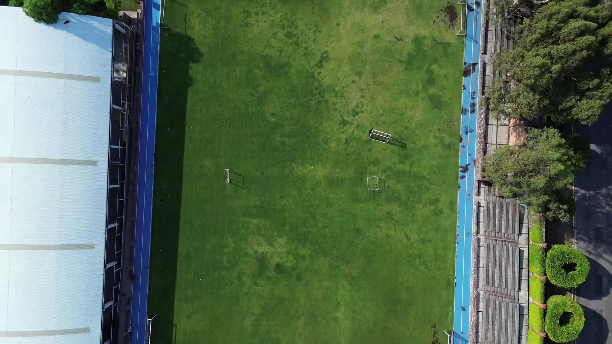
EN VIVOEN VIVO
EN VIVO
Resultados
Los podios
Carrera 5 KM
🥈
2
Samuel Barón
Carrera 5 KM
🥇
1
Estéfano López
Carrera 5 KM
🥉
3
Erick Espinosa
Carrera 5 KM
Carrera 2 KM
🥈
2
Luciano Mora
Carrera 2 KM
🥇
1
Adli Reyes
Carrera 2 KM
🥉
3
Luis Serrano
Carrera 2 KM
Revive el evento
Fotos y reels
Galería
El día de la carrera
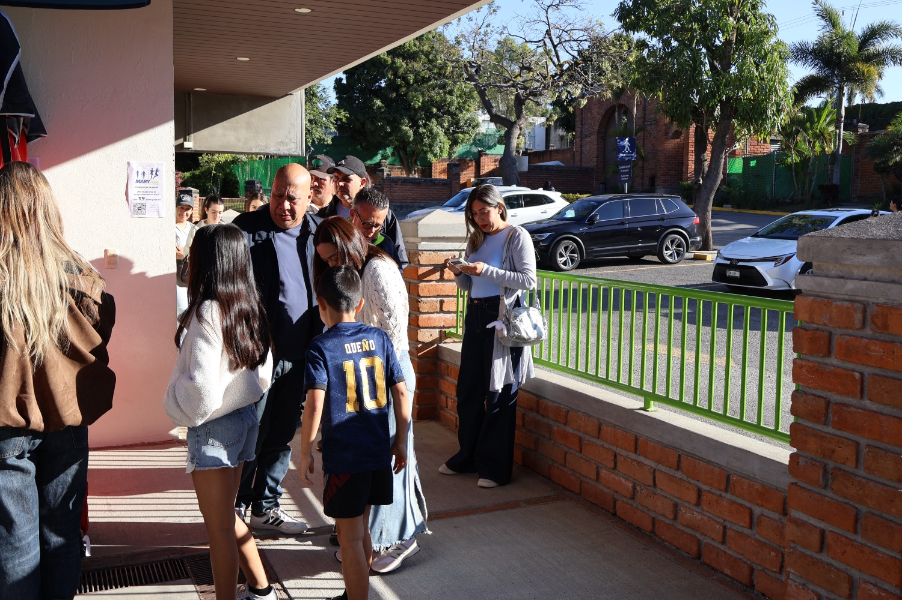
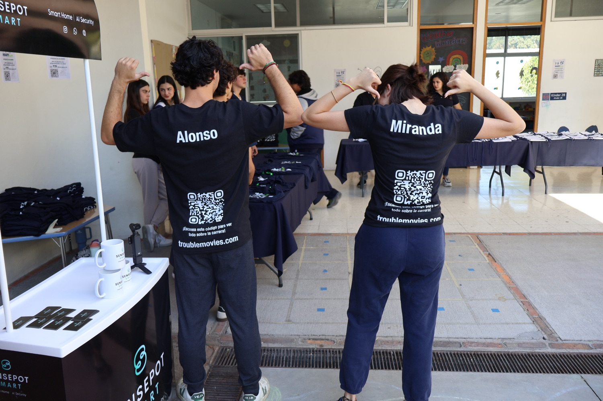
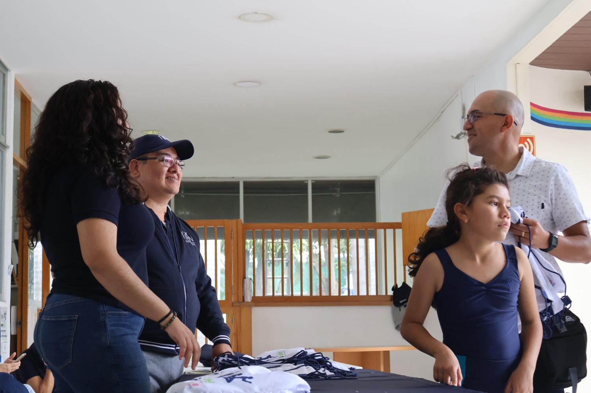
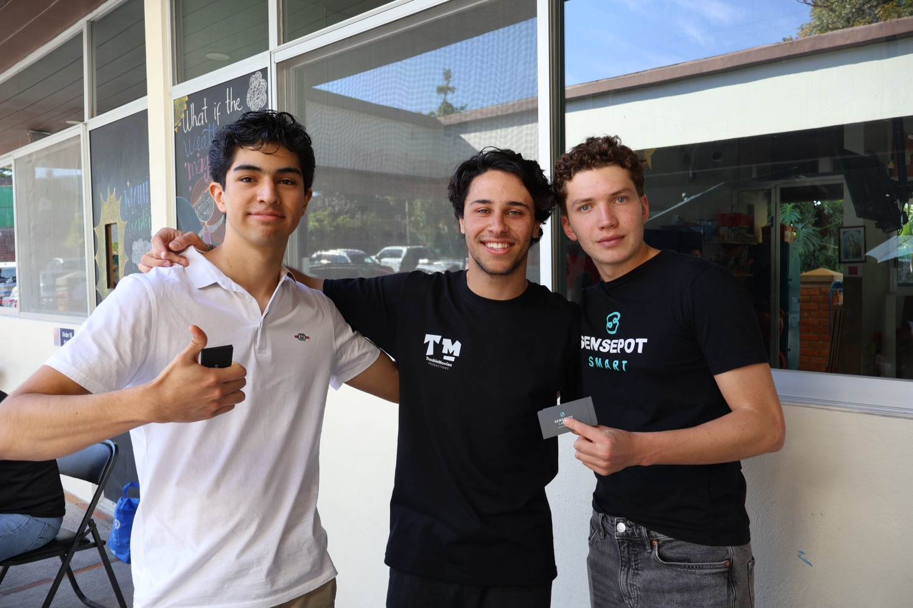
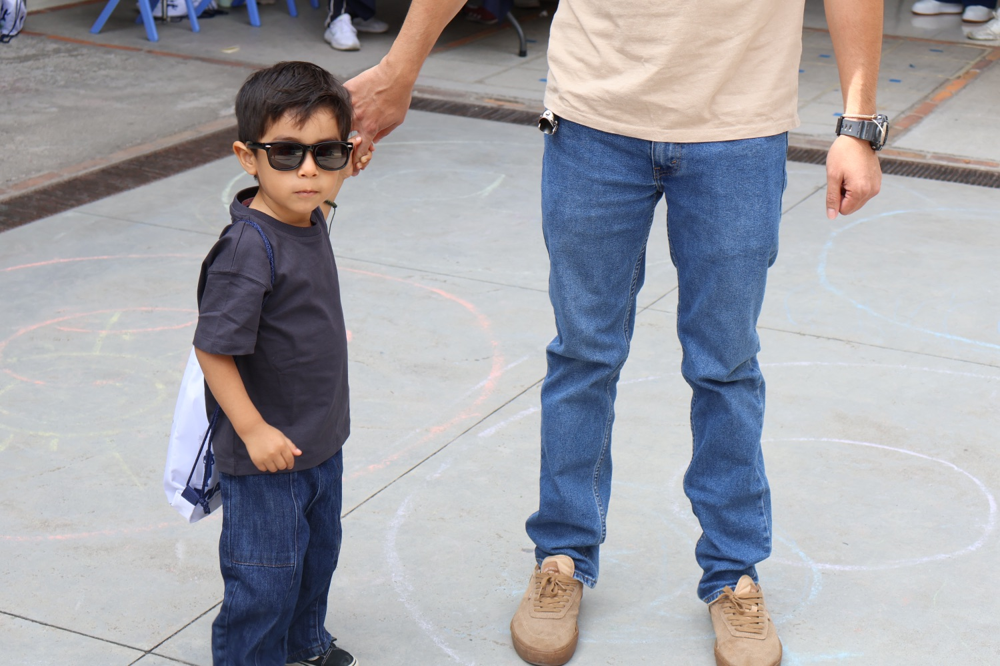
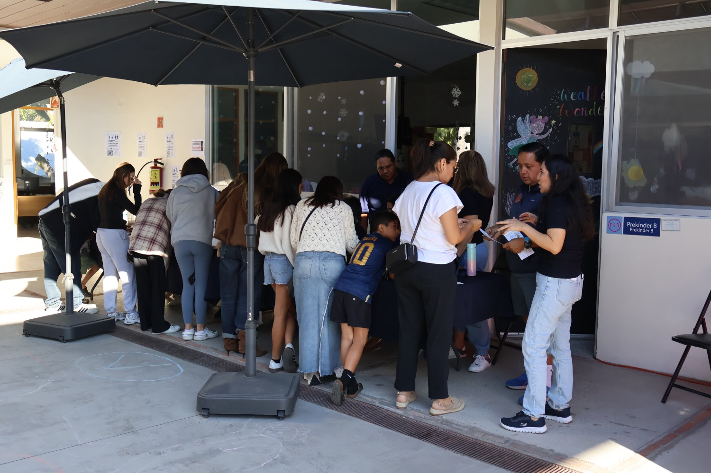
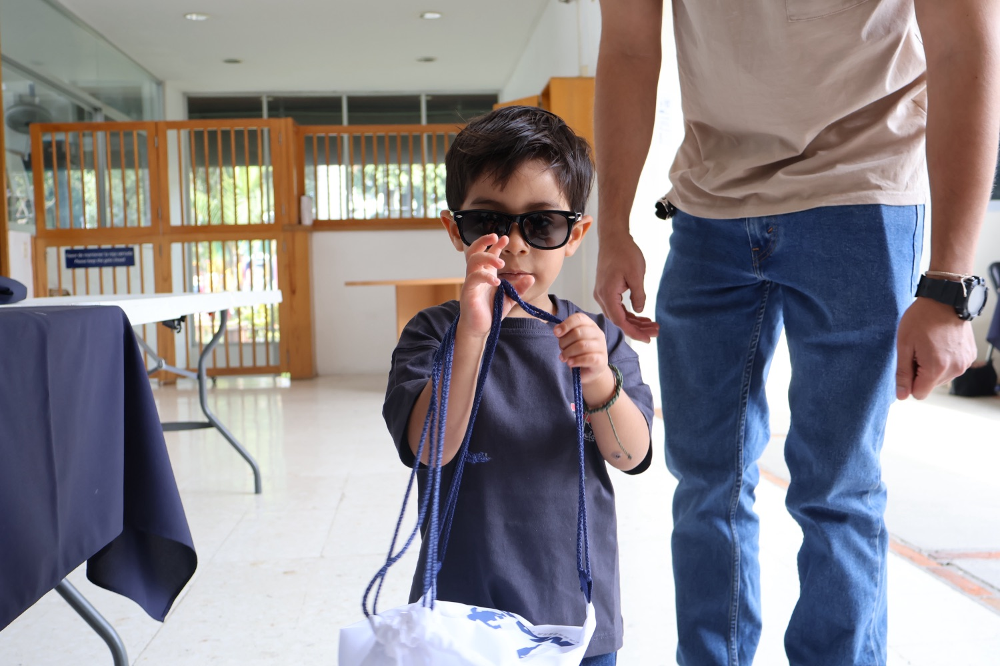
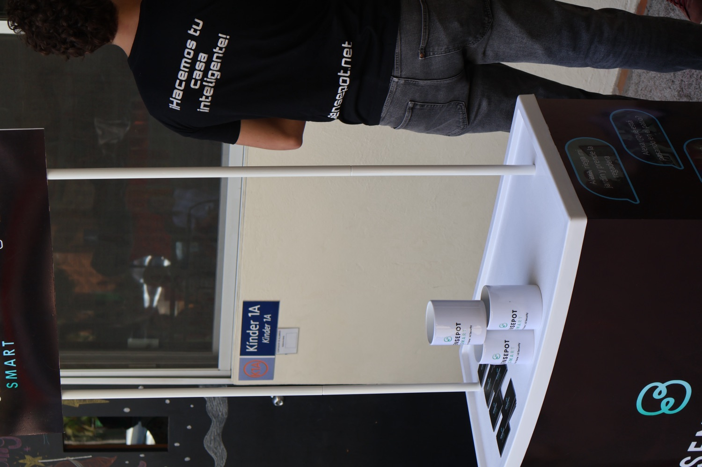
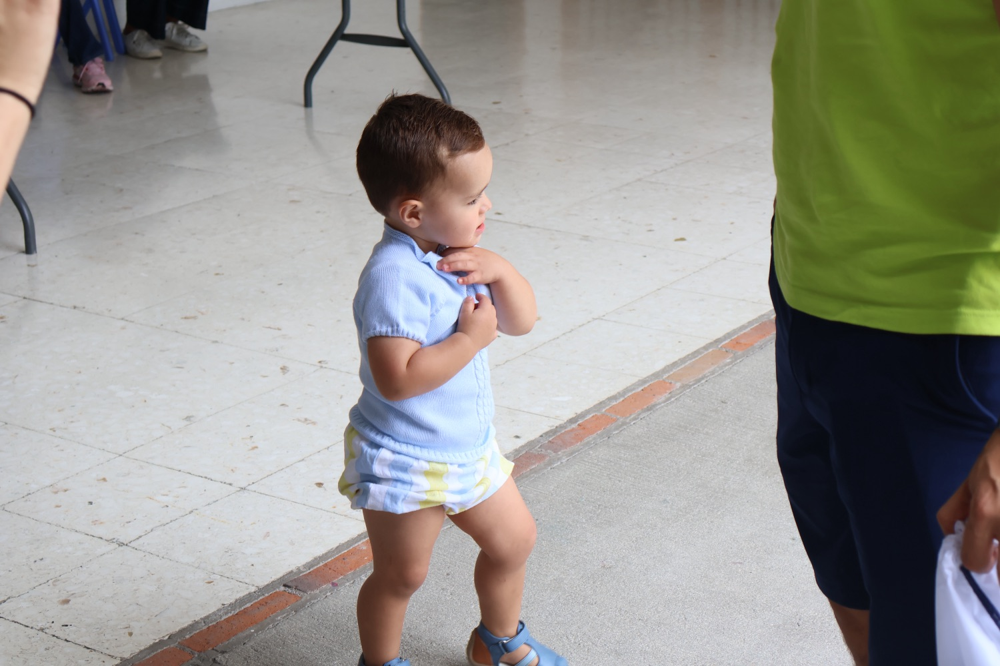
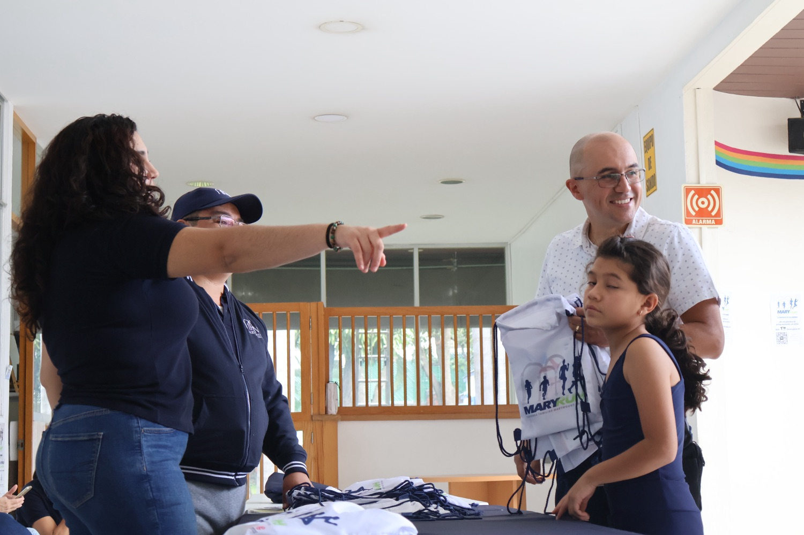
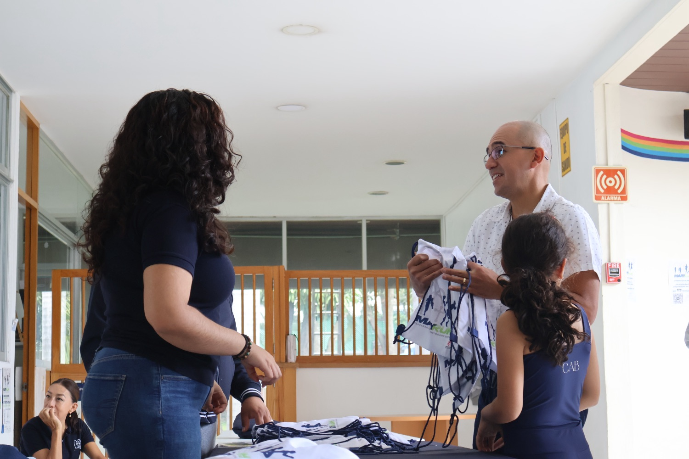
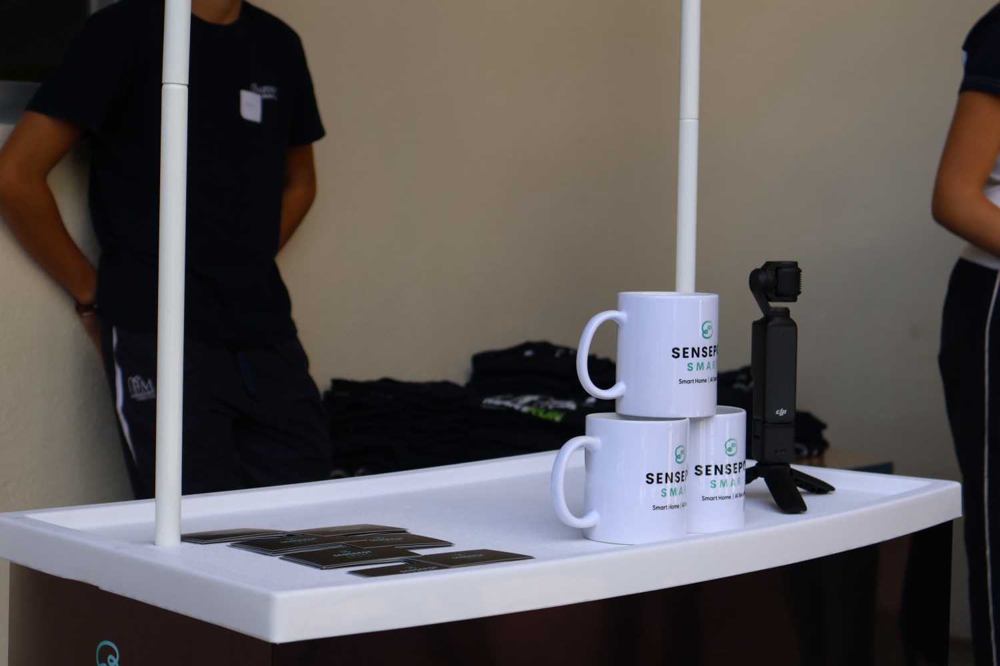
Detrás de cámara
El equipo del evento
AN
Alonso Noval
Cámara 3 y supervisión
EG
Emilia García
Cámara 1 y supervisión
MS
Miranda Sotelo
Cámara 2 y supervisión
JC
Jolie Contreras
Cámara 4 móvil
NA
Nicolás Alcántara
Cámara 5 móvil
OM
Oliver Martin
Informes y supervisión
NS
Nathalie Sauque
Cámara 6 móvil
Gracias a nuestros patrocinadores